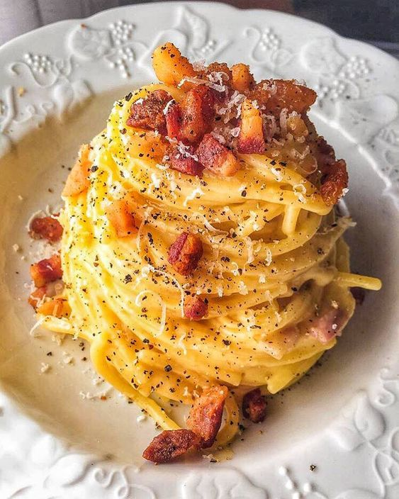
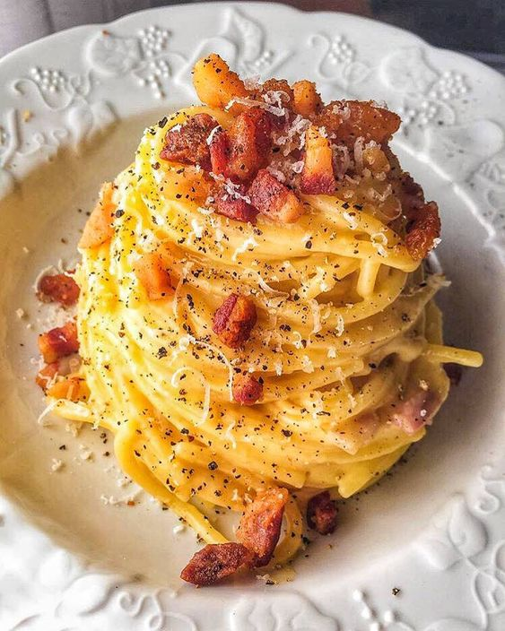

About
Welcome you to sit back, unwind and appreciate and lovely sights and hints of the ocean while our best gourmet expert sets you up and scrumptious dinner utilizing the best and freshest ingredients. buon appetito legacy comes from the parent restaurant which was built up in 1963. In contrast to other Italian eateries, buon appetito was made with the explicit expectations to appear as something else.We realise numerous individuals love Italian sustenance, yet a large number of them loathe or are unconscious of the regularly unfortunate fixings that make run-of-the-mill Italian nourishment taste so great.
Carbonara
Carbonara (Italian: [karboˈnaːra]) is an Italian pasta dish from Rome made with eggs, hard cheese, cured pork and black pepper. The dish arrived at its modern form, with its current name, in the middle of the 20th century. This simple Roman pasta dish derives its name from 'carbone' meaning coal. It was a pasta popular with the coal miners. The original recipe calls for guanciale, which is pig's cheek, but since its not easily available, the chef has used bacon instead.
 
